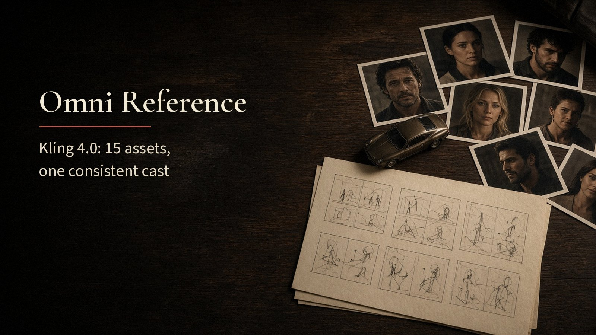
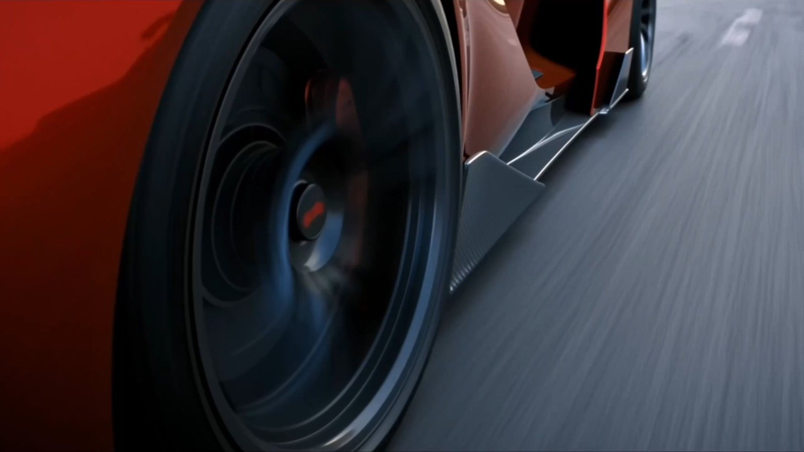

What Is Kling 4.0 Omni Reference? 15 Assets, One Consistent Cast

Omni Reference is the Kling 4.0 feature that lets one generation draw on up to 15 reference assets at once. Faces, products, motion and style stay consistent without being spelled out in the prompt. It is built for creators working with recurring characters, products or a defined look. Each image, video, subject or voice reference takes a specific job in the scene.
Key Takeaways
- One generation can combine up to 15 references in total.
- Within that total: up to 10 images, up to 5 videos totalling 30 seconds, and up to 7 subjects.
- Up to 3 of the subjects can come from video, and voice references can set a character's vocal identity.
- Kling AI's own advice is to give each reference one clear purpose rather than adding more assets.
How Omni Reference Works
Omni Reference rests on three moves.
- Collect the assets. Images can be subject photos, character turnarounds, image grids, storyboards or wireframes. Videos can guide performance, movement, camera direction and pacing, including white-model and depth-map clips.
- Assign each one a role. Kling AI's guide splits the jobs simply. A character reference sets face, clothing and identity, a style reference sets lighting and color, and a video reference sets motion, camera movement and pacing.
- Write the shot around them. The prompt then covers subject, action, setting, camera, lighting, pacing and sound, without having to describe every visual detail in words.
All of these assets go into one input box on the redesigned Kling creation page, alongside text and supported audio.
What You Can Do With It
The guide names three main uses.
- Keep a cast consistent. The same woman can move from a table-side shot to a bedroom scene and an overhead view while her face, hairstyle and clothing stay recognizable.
- Keep a product consistent. A product can appear from different angles and under different lighting while keeping its structure, materials, colors and brand details.
- Recreate a format. A reference video can set the pacing, composition and camera moves of a trending ad, while your own product and characters replace the originals.
Kling AI's demonstration of the feature is a multi-character scene: a director guiding actors while filming a high-speed chase between a supercar and a motorcycle.

Source: Kling 4.0 official guide by Kling AI, retrieved 11 November 2026.
That means several characters, a vehicle and a camera move can each come from their own reference in one generation. The prompt only has to say how they interact.
How to Get Started
The Kling 4 AI video workspace runs Kling 4.0, whose generation modes include Omni Reference next to text-to-video and first and last frames. Start with two or three references, each with a single job, such as one face, one product shot and one motion clip.
Check the first result against each reference in turn: does the face hold, does the product keep its color, does the motion follow the clip? Add the next reference only after the first ones behave. Kling AI's guide also suggests reviewing the complete sequence and refining only the parts that need it, rather than rebuilding the whole video.
What's Still Unclear
- Per-type limits in practice. Kling AI says individual input limits apply within the 15-asset total, but how a full set of 15 affects stability has not been tested publicly.
- Voice references. How closely a voice reference holds across a 30-second dialogue scene has no independent measurement yet.
- Independent ranking. No public leaderboard lists Kling 4.0 yet, so Omni Reference results cannot be compared with other models under the same conditions.